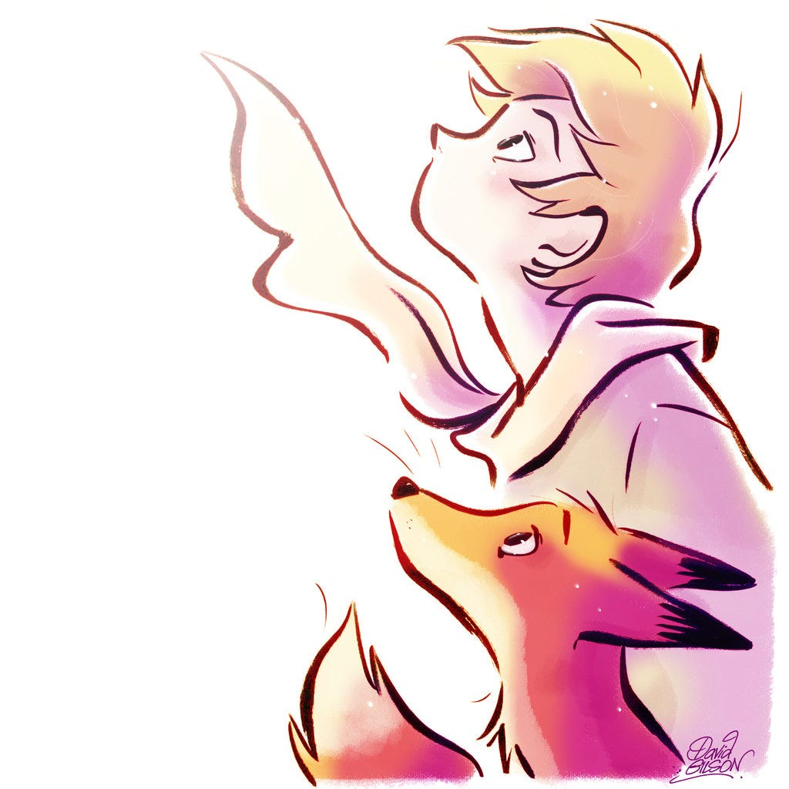

Il team dietro il progetto

Questo progetto nasce dall'esigenza di monitorare e visualizzare in tempo reale i dati provenienti da sensori collegati a un robot.
Il sistema permette di visualizzare i dati dei sensori di tocco e prossimità attraverso un'interfaccia web moderna e intuitiva.
La webcam integrata consente inoltre la trasmissione video in tempo reale con funzionalità di zoom e interazione con gli utenti.